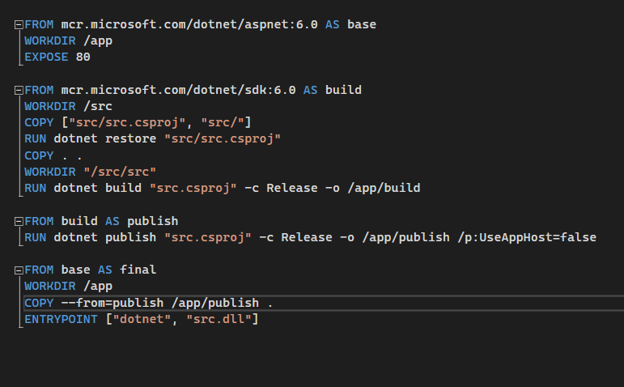
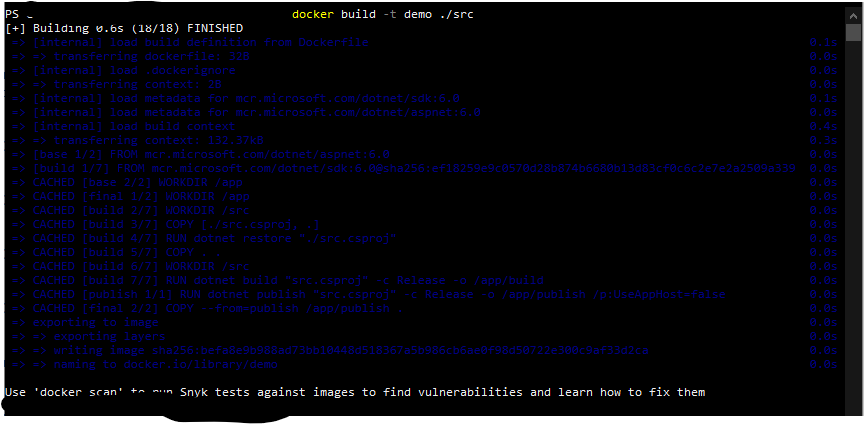
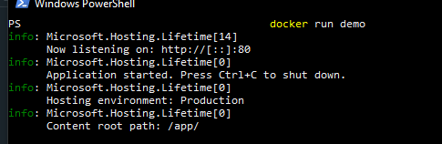
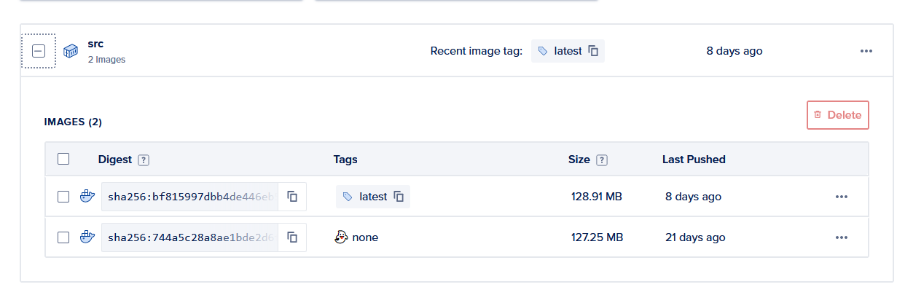

whoami
- Software Developer
-
Maintain shared services
-
Service integration
-
Resident cloud guy
What is a container?
-
A way to package your application for distribution or deployment
-
Includes an operating system
-
Not a VM
-
Not a replacement for other infrastructure
Why should a developer care?
- Consistency
- Portability
- Scalability
- Open standard
Why should a developer care?
- Backbone of cloud deployments
-
Don't be caught looking at your toes
-
This helps you from looking silly
How do I use it?
Setup is simple, and any application can use the tech
Create a Dockerfile

How do I use it
Docker Build

How do I use it
Docker Run

How do I use it
Docker push

From here, images can be deployed to a variety of services!
Why does my team care?
-
Consistency of environment for deployment
-
Distributed cruft
-
Unified knowledge set
Why does the SVP care?
-
Cloud-ready (if necessary)
-
Cost savings
-
Flexibility of deployment
Is this right for me?
- Is your server load relatively static?
- Are you running one large application, or many smaller ones?
- Are you going to manage it yourself?
- Do you depend on Kerberos/AD authentication?
Conclusion
-
The cloud is build on containers: you better know how to use them
-
Containers allow applications to run more consistently, with easier scaling
-
Containers not only make your application portable, but also your knowledge